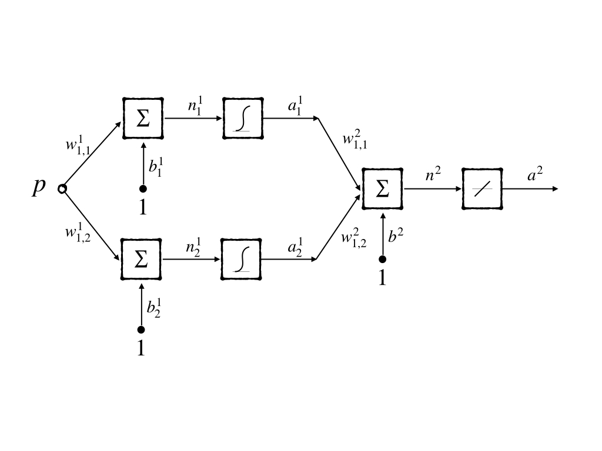
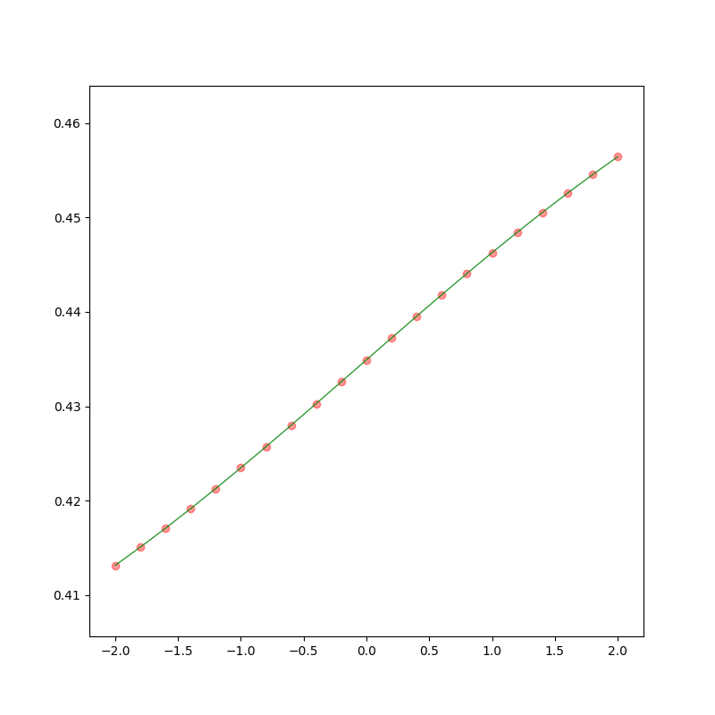

The Backpropagation Algorithm (Part I)
Keywords: backpropagation, BP
Architecture[^1]
We have seen a three-layer network is flexible in approximating functions. If we had a more-than-three-layer network, it could be used to approximate any functions as close as we want. However, another trouble came to us is how to train these networks. This problem almost killed neural networks in the 1970s. Until backpropagation(BP for short) algorithm was found that it is an efficient algorithm in training multiple layers networks.
3-layer network is also used in this post for it is the simplest multiple-layer network whose abbreviated notation is:

and a more short way to represent its architecture is:
$$
R - S^1 - S^2 - S^3 \tag{1}
$$
For the three-layer network has only three layers which is not too large to denote mathematically, then it can be writen as:
$$
\boldsymbol{a}=f^3(W^3\cdot f^2(W^2\cdot f^1(W^1\cdot \boldsymbol{p}+\boldsymbol{b}^1)+\boldsymbol{b}^2)+\boldsymbol{b}^3)\tag{2}
$$
but, it becomes impossible when we have a 10-layer network or 100-layer network. Then we can use some short equations that describe the whole operation of $M$-layer network:
$$
a^{m+1}=f^{m+1}(W^{m+1}\boldsymbol{a}^{m}+\boldsymbol{b}^{m+1})\tag{3}
$$
for $m = 1, 2, 3, \cdots M-1$. $M$ is the number of layers in the neural networks. And:
- $\boldsymbol{a}^0=\boldsymbol{p}$ is its input
- $\boldsymbol{a}=\boldsymbol{a}^M$ is its output
Performance Index
We have had a network now. And ‘performance learning’ is a kind of learning rule in learning task. Then we need a definite performance index for the 3-layer network. MSE is used here as the performance index the same as what the LMS algorithm did in post ‘Widrow-Hoff Learning(Part I)’ and ‘Widrow-Hoff Learning(Part II)’. And a set of examples of proper network behavior are needed:
$$
{\boldsymbol{p}_1,\boldsymbol{t}_1},{\boldsymbol{p}_2,\boldsymbol{t}_2},\cdots {\boldsymbol{p}_Q,\boldsymbol{t}_Q}\tag{4}
$$
where $\boldsymbol{p}_1$ is the input and $\boldsymbol{t}_1$ is the corresponding output.
Recall that in the steepest descent algorithm, we have a definite objective function, minimizing which is the task of the algorithm iteratively. BP is the generation of LMS algorithms, and both of them try to minimize the mean square error. However, the best structure of the network that is the closest to the true data is unknown. So each iteration an approximation of ‘Error’ which was calculated from our observation was used in the algorithm. And what we finally get is a trained neural network that fits the training set but not guarantees fitting the original task. So a good training set which can represent the original task as close as possible is necessary.
To make it easier to understand from the steepest descent algorithm to LMS and BP, we convert the weights and bias in the neural network form $w$ and $b$ into a vector $\boldsymbol{x}$. Then the performance index is:
$$
F(\boldsymbol{x})=\mathbb E[e^2]=\mathbb E[(t-a)^2]\tag{5}
$$
When network has multiple outputs this generalizes to:
$$
F(\boldsymbol{x})=\mathbb E[\boldsymbol{e}^T\boldsymbol{e}]=\mathbb E[(\boldsymbol{t}-\boldsymbol{a})^T(\boldsymbol{t}-\boldsymbol{a})]\tag{6}
$$
During an iteration, in the LMS algorithm, MSE(mean square error) is approximated by SE(square error):
$$
\hat{F}(\boldsymbol{x})=(\boldsymbol{t}-\boldsymbol{a})^T(\boldsymbol{t}-\boldsymbol{a})=\boldsymbol{e}^T\boldsymbol{e}\tag{7}
$$
where the expectations are replaced by the calculation of current input, output, and target.
Reviewing the ‘steepest descent algorithm’, the approximate MSE which is also called stochastic gradient descent:
$$
\begin{aligned}
w^m_{i,j}(k+1)&=w^m_{i,j}(k)-\alpha \frac{\partial \hat{F}}{\partial w^m_{i,j}}\
b^m_{i}(k+1)&=b^m_{i}(k)-\alpha \frac{\partial \hat{F}}{\partial b^m_{i}}
\end{aligned}\tag{8}
$$
where $\alpha$ is the learning rate.
However, the steep descent algorithm seems can not work on a multiple-layer network for we can not just calculate the partial derivative in the hidden layer and input layer directly. So we should recall another mathematical tool - chain rule.
Chain Rule
Calculus
when $f$ is explicit function of $\boldsymbol{n}$ and $\boldsymbol{n}$ is a explicit function of $\boldsymbol{w}$, we can calculate the partial derivative $\frac{\partial f}{\partial w}$ by:
$$
\frac{\partial f}{\partial w}=\frac{\partial f}{\partial n}\frac{\partial n}{\partial w}\tag{9}
$$
The whole process looks like a chain. And let’s look at a simple example: when we have $f(n)=e^n$ and $n=2w$, we have $f(n(w))=e^{2w}$. We can easily calculate the direvative $\frac{\partial f}{\partial w}=\frac{\partial e^2w}{\partial w}=2e^{2w}$. And when chain rule is used, we have:
$$
\frac{\partial f(n(w))}{\partial w}=\frac{\partial e^n}{\partial n}\frac{\partial n}{\partial w}=\frac{\partial e^n}{\partial n}\frac{\partial 2w}{\partial w}=e^n\cdot 2=2e^{2w}\tag{10}
$$
that is the same as what we get directly.
When the chain rule is used in the second part on the right of equation (8), we get the way to calculate the derivative of the weight of hidden layers:
$$
\begin{aligned}
\frac{\partial \hat{F}}{\partial w^m_{i,j}}&=\frac{\partial \hat{F}}{\partial n^m_i}\cdot \frac{\partial n^m_i}{\partial w^m_{i,j}}\
\frac{\partial \hat{F}}{\partial b^m_{i}}&=\frac{\partial \hat{F}}{\partial n^m_i}\cdot \frac{\partial n^m_i}{\partial b^m_{i}}
\end{aligned}\tag{11}
$$
from the abbreviated notation, we know that $n^m_i=\sum^{S^{m-1}}{j=1}w^m{i,j}a^{m-1}_{j}+b^m_i$. Then equation (11) can be writen as:
$$
\begin{aligned}
\frac{\partial \hat{F}}{\partial w^m_{i,j}}&=\frac{\partial \hat{F}}{\partial n^m_i}\cdot \frac{\partial \sum^{S^{m-1}}{j=1}w^m{i,j}a^{m-1}{j}+b^m_i}{\partial w^m_{i,j}}=\frac{\partial \hat{F}}{\partial n^m_i}\cdot a^{m-1}_j\
\frac{\partial \hat{F}}{\partial b^m{i}}&=\frac{\partial \hat{F}}{\partial n^m_i}\cdot \frac{\partial \sum^{S^{m-1}}{j=1}w^m{i,j}a^{m-1}_{j}+b^m_i}{\partial b^m_{i}}=\frac{\partial \hat{F}}{\partial n^m_i}\cdot 1
\end{aligned}\tag{12}
$$
Equation (12) could also be simplified by defining a new concept: sensitivity.
Sensitivity
We define sensitivity as $s^m_i\equiv \frac{\partial \hat{F}}{\partial n^m_{i}}$ that means the sensitivity of $\hat{F}$ to changes in the $i^{\text{th}}$ element of the net input at layer $m$. Then equation (12) can be simplified as:
$$
\begin{aligned}
\frac{\partial \hat{F}}{\partial w^m_{i,j}}&=s^m_{i}\cdot a^{m-1}j\
\frac{\partial \hat{F}}{\partial b^m{i}}&=s^m_{i}\cdot 1 \end{aligned}\tag{13}
$$
Then the steepest descent algorithm is:
$$
\begin{aligned}
w^m_{i,j}(k+1)&=w^m_{i,j}(k)-\alpha s^m_{i}\cdot a^{m-1}j\
b^m{i}(k+1)&=b^m_{i}(k)-\alpha s^m_{i}\cdot 1
\end{aligned}\tag{14}
$$
This can also be written in a matrix form:
$$
\begin{aligned}
W^m(k+1)&=W^m(k)-\alpha \boldsymbol{s}^m(\boldsymbol{a}^{m-1})^T\
\boldsymbol{b}^m(k+1)&=\boldsymbol{b}^m(k)-\alpha \boldsymbol{s}^m\cdot 1
\end{aligned}\tag{15}
$$
where:
$$
\boldsymbol{s}^m=\frac{\partial \hat{F}}{\alpha \boldsymbol{n}^m}=\begin{bmatrix}
\frac{\partial \hat{F}}{\partial n^m_1}\
\frac{\partial \hat{F}}{\partial n^m_2}\
\vdots\
\frac{\partial \hat{F}}{\partial n^m_{S^m}}\
\end{bmatrix}\tag{16}
$$
And be careful of the $\boldsymbol{s}$ which means the sensitivity and $S^m$ which means the number of layers $m$
Backpropagating the Sensitivities
Equation (15) is our BP algorithm. But we can not calculate sensitivities yet. We can easily calculate the sensitivities of the last layer which is the same as LMS. And we have an inspiration that is we can use the relation between the latter layer and current layer. So let’s observe the Jacobian matrix which represents the relation between the latter layer linear combination output $\boldsymbol{n}^{m+1}$ and current layer linear combination output $\boldsymbol{n}^m$:
$$
\frac{\partial \boldsymbol{n}^{m+1}}{\partial \boldsymbol{n}^{m}}=
\begin{bmatrix}
\frac{
\partial n^{m+1}1}{\partial n^{m}_1} &
\frac{\partial n^{m+1}_1}{\partial n^{m}_2} &
\cdots & \frac{\partial n^{m+1}_1}{\partial n^{m}{S^m}}\
\frac{\partial n^{m+1}2}{\partial n^{m}_1} &
\frac{\partial n^{m+1}_2}{\partial n^{m}_2} &
\cdots & \frac{\partial n^{m+1}_2}{\partial n^{m}{S^m}}\
\vdots&\vdots&&\vdots\
\frac{\partial n^{m+1}{S^{m+1}}}{\partial n^{m}1} &
\frac{\partial n^{m+1}{S^{m+1}}}{\partial n^{m}2} &
\cdots &
\frac{\partial n^{m+1}{S^{m+1}}}{\partial n^{m}{S^m}}\
\end{bmatrix}\tag{17}
$$
And the $(i,j)^{\text{th}}$ element of the matrix is:
$$
\begin{aligned}
\frac{\partial n^{m+1}i}{\partial n^{m}j}&=\frac{\partial (\sum^{S^m}{l=1}w^{m+1}{i,l}a^m_l+b^{m+1}i)}{\partial n^m_j}\
&= w^{m+1}_{i,j}\frac{\partial a^m_j}{\partial n^m_j}\
&= w^{m+1}{i,j}\frac{\partial f^m(n^m_j)}{\partial n^m_j}\
&= w^{m+1}_{i,j}\dot{f}^m(n^m_j)
\end{aligned}\tag{18}
$$
where $\sum^{S^m}{l=1}w^{m+1}{i,l}a^m_l+b^{m+1}_i$ is the linear combination output of layer $m+1$ and $a^m$ is the output of layer $m$. And we can define $\dot{f}^m(n^m_j)=\frac{\partial f^m(n^m_j)}{\partial n^m_j}$
Therefore the Jacobian matrix can be written as:
$$
\begin{aligned}
&\frac{\partial \boldsymbol{n}^{m+1}}{\partial \boldsymbol{n}^{m}}\
=&W^{m+1}\dot{F}^m(\boldsymbol{n}^m)\
=&\begin{bmatrix}
w^{m+1}{1,1}\dot{f}^m(n^m_1) &
w^{m+1}_{1,2}\dot{f}^m(n^m_2) &
\cdots & w^{m+1}_{1,{S^m}}\dot{f}^m(n^m{S^m})\
w^{m+1}{2,1}\dot{f}^m(n^m_1) &
w^{m+1}_{2,2}\dot{f}^m(n^m_2) &
\cdots & w^{m+1}_{2,{S^m}}\dot{f}^m(n^m{S^m})\
\vdots&\vdots&&\vdots\
w^{m+1}{S^{m+1},1}\dot{f}^m(n^m_1) &
w^{m+1}_{S^{m+1},2}\dot{f}^m(n^m_2) &
\cdots & w^{m+1}_{S^{m+1},{S^m}}\dot{f}^m(n^m{S^m})
\end{bmatrix}
\end{aligned}
\tag{19}
$$
where we have:
$$
\dot{F}^m(\boldsymbol{n}^m)=
\begin{bmatrix}
\dot{f}(n^m_1)&0&\cdots&0\
0&\dot{f}(n^m_2)&\cdots&0\
\vdots&\vdots&\ddots&\vdots\
0&0&\cdots&\dot{f}(n^m_{S^m})
\end{bmatrix}\tag{20}
$$
Then recurrence relation for the sensitivity by using chain rule in matrix form is:
$$
\begin{aligned}
\boldsymbol{s}^m&=\frac{\partial \hat{F}}{\partial n^m}\
&=(\frac{\partial \boldsymbol{n}^{m+1}}{\partial \boldsymbol{n}^{m}})^T\cdot \frac{\partial \hat{F}}{\partial n^{m+1}}\
&=\dot{F}^m(\boldsymbol{n}^m)W^{m+1}\boldsymbol{s}^{m+1}\
\end{aligned}\tag{21}
$$
This is why it is called backpropagation, because the sensitivities of layer $m$ is calculated by layer $m+1$ :
$$
S^{M}\to S^{M-1}\to S^{M-2}\to \cdots \to S^{1}\tag{22}
$$
Same to the LMS algorithm, BP is also an approximating algorithm of the steepest descent technique. And the start of BP $\boldsymbol{s}^M_i$ is:
$$
\begin{aligned}
\boldsymbol{s}^M_i&=\frac{\partial \hat{F}}{\partial n^m_i}\
&=\frac{\partial (\boldsymbol{t}-\boldsymbol{a})^T(\boldsymbol{t}-\boldsymbol{a})}{\partial n^m_i}\
&=\frac{\partial \sum_{j=1}^{S^M}(t_j-a_j)^2}{\partial n^M_i}\
&=-2(t_i-a_i)\frac{\partial a_i}{\partial n^M_{i}}
\end{aligned}\tag{23}
$$
and this is easy to understand because it is just a variation of the LMS algorithm. Since
$$
\frac{\partial a_i}{\partial n^M_i}=\frac{\partial f^M(n^M_i)}{\partial n^M_i}=\dot{f}^M(n^M_j)\tag{24}
$$
we can write:
$$
s^M_i=-2(t_i-a_i)\dot{f}^M(n^M_i)\tag{25}
$$
and its matrix form is:
$$
\boldsymbol{s}^M_i=-\dot{F}^M(\boldsymbol{n}^M)(\boldsymbol{t}-\boldsymbol{a})\tag{26}
$$
Summary of BP
- Propagate the input forward through the network
- $\boldsymbol{a}^0=\boldsymbol{p}$
- $\boldsymbol{a}^{m+1}=f^{m+1}(W^{m+1}\boldsymbol{a}^m+\boldsymbol{b}^{m+1})$ for $m=0,1,2,\cdots, M-1$
- $\boldsymbol{a}=\boldsymbol{a}^M$
- Propagate the sensitivities backward through the network:
- $\boldsymbol{s}^M=-2\dot{F}^M(\boldsymbol{n}^M)(\boldsymbol{t}-\boldsymbol{a})$
- $\boldsymbol{s}^m= \dot{F}^m(\boldsymbol{n}^m)(W^{m+1})^T\boldsymbol{s}^{m+1})$ for $m=M-1,\cdots,2,1$
- Finally, the weights and bias are updated using the approximate steepest descent rule:
- $W^{m}(k+1)=W^{m}(k)-\alpha \boldsymbol{s}^m(\boldsymbol{a}^{m-1})^T$
- $\boldsymbol{b}^{m}(k+1)=\boldsymbol{b}^{m}(k)-\alpha \boldsymbol{s}^m$
An example of BP algorithm
Here we look at a simple example. Considering the function:
$$
g(p)=1+\sin(\frac{\pi}{4}p) \text{ for } -2\leq p\leq 2\tag{27}
$$
Then the sampling process should be done. And we get same function values with some selected inputs $p$’s, for example, we have a set of
$$
p={-2,-1.8,\cdots ,1.8,2.0}\tag{28}
$$
then we get corresponding function values of $g(p)$ are
$$
\begin{aligned}
{&\
&1+\sin(\frac{\pi}{4}\times(-2)),\
&1+\sin(\frac{\pi}{4}\times(-1.8)),\
&\cdots,\
&1+\sin(\frac{\pi}{4}\times(1.8)),\
&1+\sin(\frac{\pi}{4}\times(2))\
}&
\end{aligned}
\tag{29}
$$
So, we have had training data, and then we need to choose a network architecture. The following network would be used:

This 1-2-1 network is relatively simpler than other networks. And what we should do next is to choose initial values for the network weights and biases. They are usually chosen to be small random values. Here we chose all of these parameters from a uniform distribution over $[-1,1]$.
And the inputs ${-2.0,-1.8,-1.6,\cdots,1.8,2.0}$ are fed into the 1-2-1 network whose initial weights are:
$$
W^1(0)=\begin{bmatrix}
-0.27\-0.41
\end{bmatrix}\
\boldsymbol{b}^1(0)=\begin{bmatrix}
-0.48\-0.13
\end{bmatrix}\
W^2(0)=\begin{bmatrix}
0.09\-0.17
\end{bmatrix}\
\boldsymbol{b}^2(0)=\begin{bmatrix}
0.48
\end{bmatrix}\tag{30}
$$
and we get the output of the network are:

Now let’s start the algorithm step by step:
- we have the first input $\boldsymbol{a}^0=\boldsymbol{p}=1$
- The output of the first layer is then
$$\begin{aligned}
\boldsymbol{a}^1&=f(W^1\boldsymbol{a}^0+\boldsymbol{b}^1)\
&=\text{logsig}(\begin{bmatrix}-0.27\-0.41\end{bmatrix}\begin{bmatrix}1\end{bmatrix}+\begin{bmatrix}-0.48\-0.13\end{bmatrix})\
&=\text{logsig}(\begin{bmatrix}-0.75\-0.54\end{bmatrix})\
&=\begin{bmatrix}\frac{1}{1+e^{0.75}}\\frac{1}{1+e^{0.54}}\end{bmatrix}\
&=\begin{bmatrix}0.321\0.368\end{bmatrix}
\end{aligned}
$$ - The output of the second layer is:
$$
\begin{aligned}
\boldsymbol{a}^2&=f(W^2\boldsymbol{a}^1+\boldsymbol{b}^2)\
&=\text{logsig}(\begin{bmatrix}0.09&-0.17\end{bmatrix}\begin{bmatrix}0.321\0.368\end{bmatrix}+\begin{bmatrix}0.48\end{bmatrix})\
&=\text{logsig}(\begin{bmatrix}0.446\end{bmatrix})
\end{aligned}
$$
- The output of the first layer is then
- Because we have generated both the input and target in equation(3), we can calculate the error:
$$
\begin{aligned}
e=t-a&={1+\sin(\frac{\pi}{4}p)}-a^2\
&={1+\sin(\frac{\pi}{4}\times 1)}-0.446\
&=1.261
\end{aligned}
$$ - We then backpropagate the sensitivities during which derivatives of transfer function are needed:
$$
\begin{aligned}
\dot{f}^1(n)&=\frac{d}{dn}(\frac{1}{1+e^{-n}})\
&=\frac{e^{-n}}{(1+e^{-n})^2}\
&=(1-\frac{1}{1+e^{-n}})(\frac{1}{1+e^{-n}})\
&=(1-a^1)(a^1)
\end{aligned}
$$
and
$$
\dot{f}^2(n)=\frac{d}{dn}(n)=1
$$ - Now we have all components which is required for backpropagating
- The starting point is found in the second layer:
$$
\begin{aligned}
\boldsymbol{s}^2&=2\dot{F}^2(\boldsymbol{n}^1)(\boldsymbol{t}-\boldsymbol{a})\
&=-2\begin{bmatrix}
\end{bmatrix}(1.261)\\dot{f}^2(n^2)
&=-2\begin{bmatrix}
\end{bmatrix}(1.261)\1
&=-2.522
\end{aligned}
$$ - And the sensitivity of first layer is:
$$
\begin{aligned}
\boldsymbol{s}^1&=\dot{F}^1(\boldsymbol{n}^1)(W^2)^T\boldsymbol{s}^2\
&=\begin{bmatrix}
\end{bmatrix}\begin{bmatrix}(1-a^1_1)(a^1_1)&0\\ 0&(1-a^1_2)(a^1_2)
\end{bmatrix}\begin{bmatrix}0.09\\ -0.17
\end{bmatrix}\-2.522
&=\begin{bmatrix}
\end{bmatrix}\begin{bmatrix}(1-0.321)(0.321)&0\\ 0&(1-0.368)(0.368)
\end{bmatrix}\begin{bmatrix}0.09\\ -0.17
\end{bmatrix}\-2.522
&=\begin{bmatrix}
\end{bmatrix}\begin{bmatrix}0.218&0\\ 0&0.233
\end{bmatrix}\-0.227\\ 0.429
&=\begin{bmatrix}
\end{bmatrix}-0.0495\\ 0.0997
\end{aligned}
$$
- The starting point is found in the second layer:
- Finally we update the weights. For similicity, we will use a learning rate $\alpha = 0.01$:
$$
\begin{aligned}
W^2(1)&=W^2(0)-\alpha\boldsymbol{s}^2(\boldsymbol{a}^1)^T\
&=\begin{bmatrix}0.09&-0.17\end{bmatrix}-0.1\begin{bmatrix}-2.522\end{bmatrix}\begin{bmatrix}0.321&0.368\end{bmatrix}\
&=\begin{bmatrix}0.171&-0.0772\end{bmatrix}
\end{aligned}
$$
$$
\begin{aligned}
\boldsymbol{b}^2(1)&=\boldsymbol{b}^2(0)-\alpha\boldsymbol{s}^2\cdot 1\
&=\begin{bmatrix}0.48\end{bmatrix}-0.1\begin{bmatrix}-2.522\end{bmatrix}\
&=\begin{bmatrix}0.732\end{bmatrix}
\end{aligned}
$$
$$
\begin{aligned}
W^1(1)&=W^1(0)-\alpha\boldsymbol{s}^1(\boldsymbol{a}^0)^T\
&=\begin{bmatrix}-0.27\-0.41\end{bmatrix}-0.1\begin{bmatrix}-0.0495\0.0997\end{bmatrix}\begin{bmatrix}1\end{bmatrix}\
&=\begin{bmatrix}-0.265\-0.420\end{bmatrix}
\end{aligned}
$$
$$
\begin{aligned}
\boldsymbol{b}^1(1)&=\boldsymbol{b}^1(0)-\alpha\boldsymbol{s}^1\cdot 1\
&=\begin{bmatrix}-0.48\-0.13\end{bmatrix}-0.1\begin{bmatrix}-0.0495\0.0997\end{bmatrix}\
&=\begin{bmatrix}-0.475\-0.140\end{bmatrix}
\end{aligned}
$$
References
[^1]: Demuth, Howard B., Mark H. Beale, Orlando De Jess, and Martin T. Hagan. Neural network design. Martin Hagan, 2014.